9 job(s) · 19 item(s) · Baker Production QC
Flash frames 2.4-3.2 stops under clipping
All 5 flash frames checked (07078, 07089, 07100, 07209, 07225) peak 2.4-3.2 stops below clipping at 99th percentile (target about 1 stop). Flash is underpowered for these rooms - raise flash power or ISO so the flash frame carries the room.
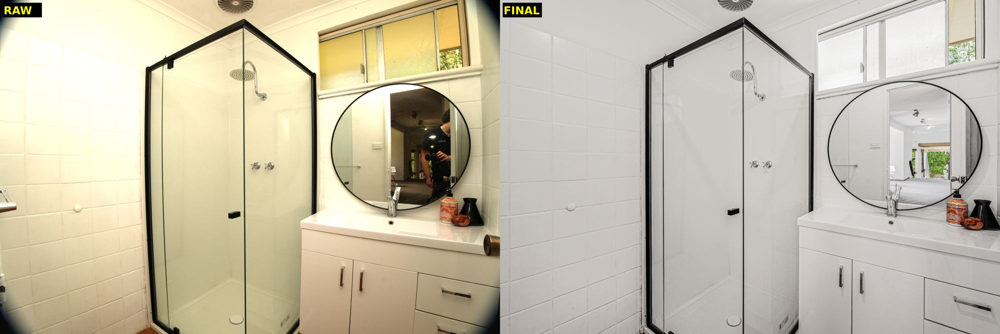
No flash frame in kitchen and main living groups
Kitchen (07231-07251) and main living (07281-07301) groups are 5-frame ambient brackets only, while bedrooms/bathrooms got a flash frame. Shoot a flash frame for every interior, especially rooms with dark cabinetry and timber floors.
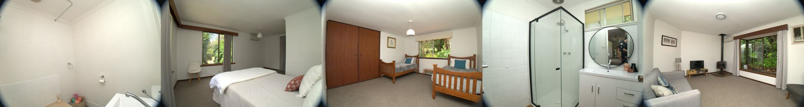
Photographer and tripod visible in bathroom mirror
In the ensuite (07204-07209) the camera/tripod is reflected in the round mirror; editor cleaned it out but shoot from an angle that keeps the rig out of mirrors.
Flash frames about 3 stops under
In every checked room with a flash frame (07377, 07395, 07407, 07480) the 99th-percentile highlights sit 2.8-3.1 stops below clipping at ISO 640 1/160, so the flash pop is weak and the editor has to lean on the warm tungsten ambient brackets. Raise flash power or ISO so whites land about 1 stop under clipping.
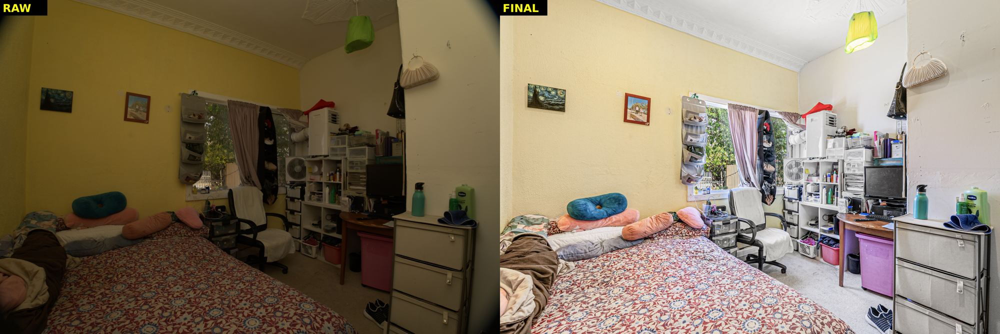
No flash frame in kitchen, living or entry
Kitchen 07331, living 07413 and entry 07433 were shot as 5- or 10-frame ambient brackets with no flash frame, so the editor (and QC) had nothing neutral to take true wall and floor colour from under the orange tungsten lights. Always finish each interior group with a flash frame.
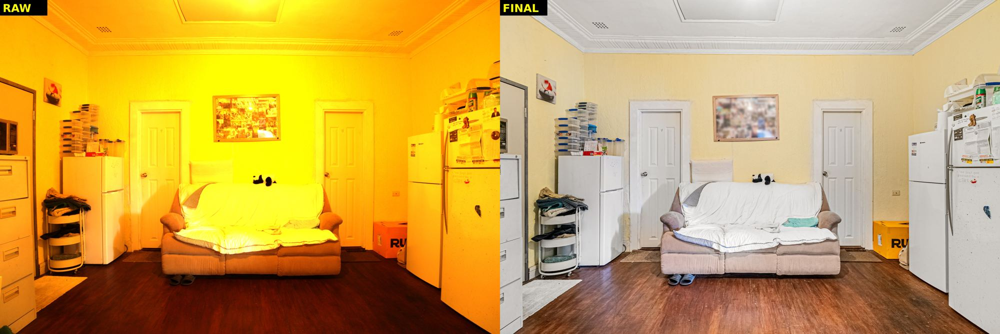
Flash frames about 2.6-2.8 stops under clipping
In the three groups that had a flash frame (DSC08996, DSC09014, DSC09020), the 99th percentile of the raw data sits 2.6-2.8 stops below clipping (target is about 1 stop; 1.7+ is too dark). The flash frame gives the editor too little clean light to work with. Raise flash power or bounce off the ceiling closer to the camera.
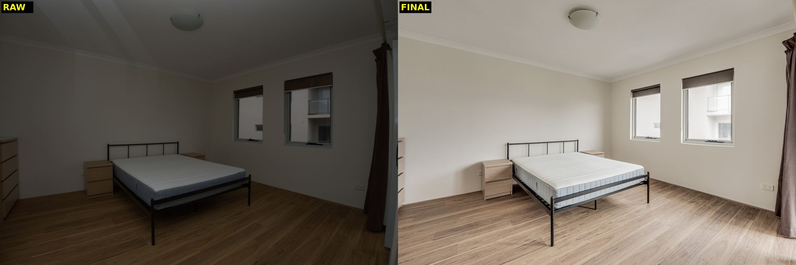
No flash frame in bathrooms, laundry and some living shots
Groups DSC08952-08990 (bathrooms, laundry, bedroom 1) and DSC09021-09124 are 5-frame ambient brackets with no flash. Bathroom 0EV needed a 6 s exposure (lights off, mixed light). Add the 6th flash frame in every interior, especially small dark wet areas.
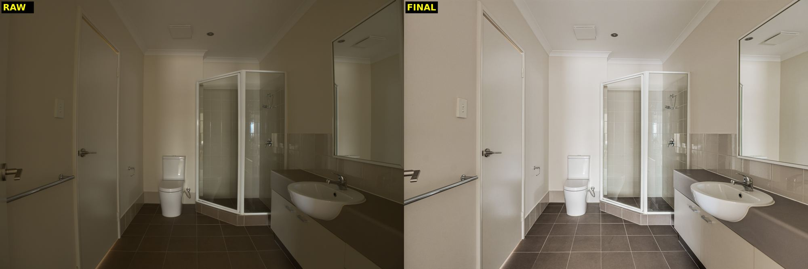
Flash frames about 4 stops under clipping
Every flash frame checked (07234, 07240, 07282, 07305, 07450) has its brightest whites about 4 stops under clipping (target is about 1 stop), and the photographer stands in frame in several of them. The flash is too weak for these large tiled rooms, so the editor has little clean flash colour to work from. Raise flash power or bounce closer, and step out of the flash frame. Several groups (07289, 07411-07462) have no flash frame at all.
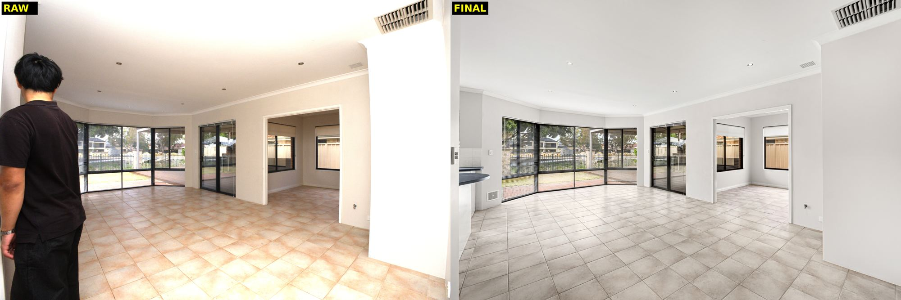
Flash missing in most rooms, ~3 stops under
Only 3 of 25 raw groups end with a flash frame; kitchen, both bathrooms and most rooms are 5-frame ambient only. Where flash was fired (04991, 05048, 05097) the highlights sit 2.9-3.3 stops under clipping at ISO 640 1/160 and one shows 'return light not detected'. Add a properly powered flash frame (whites ~1 stop under clip) to every interior.
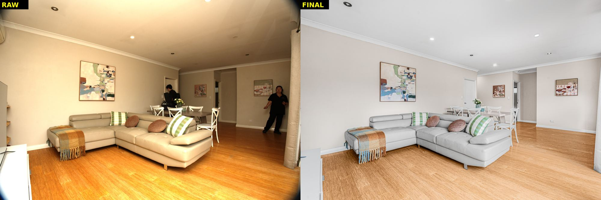
People and photographer in frame
Two people stand in the living/dining raw (05043/05048) and the photographer is reflected in the bathroom mirror (05109). The editor removed them, but clear the room and shoot the mirror from an angle to avoid relying on retouching.
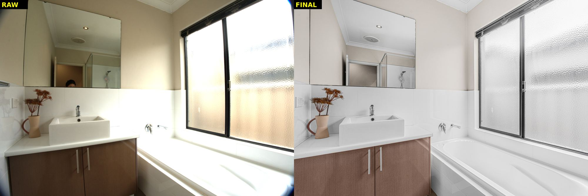
Flash 2.2-2.8 stops too dark, many rooms no flash
Only 5 of 13 checked interiors have a flash frame, and those sit 2.23-2.79 stops under clipping (bathroom 1.31). The house was shot 18:28-18:47 with tungsten lights on, so the ambient frames carry a heavy orange cast. Fire a flash frame in every room at about 1 stop under clipping.
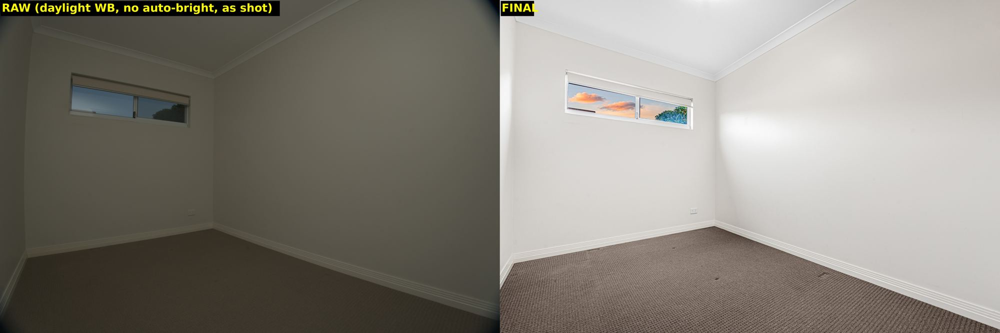
Low sun patches across bedroom walls
DSC05539 was shot at 18:28 with low sun streaming onto the wall and carpet. The editor softened it but blotchy remnants are still visible on the wall. Close blinds or shoot sun-facing rooms earlier.
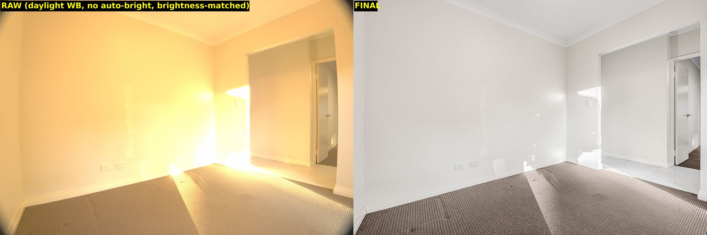
Shooting through flyscreen causes moire
The kitchen sliding door (DSC05612) was shot through its flyscreen, which creates colour moire in the raw. Slide the flyscreen open (or reframe) for door views.
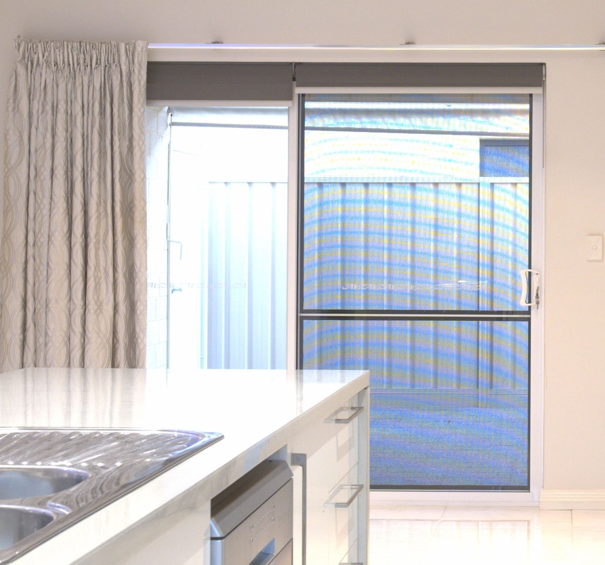
Flash about 2.5-3.7 stops too dark
Every flash frame checked sits 2.25-3.68 stops under clipping at the 99th percentile (target about 1 stop). The flash is barely contributing at f/9 ISO 640 1/160, so the editor is relying on ambient frames lit by warm downlights. Raise flash power (or bounce closer) so the brightest whites land about 1 stop under clipping.
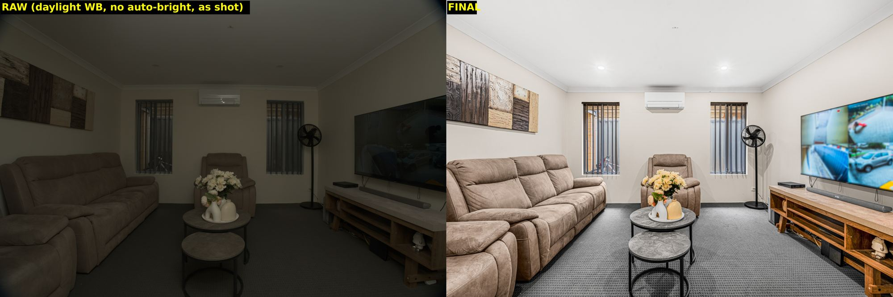
TV left on showing a CCTV feed
In the theatre room (DSC05389) the TV was on, showing the vendor's security-camera feed (driveway and cars), and it went into the final. Turn TVs off or put up a neutral screen before shooting - a live CCTV feed is also a privacy/security concern for the vendor.
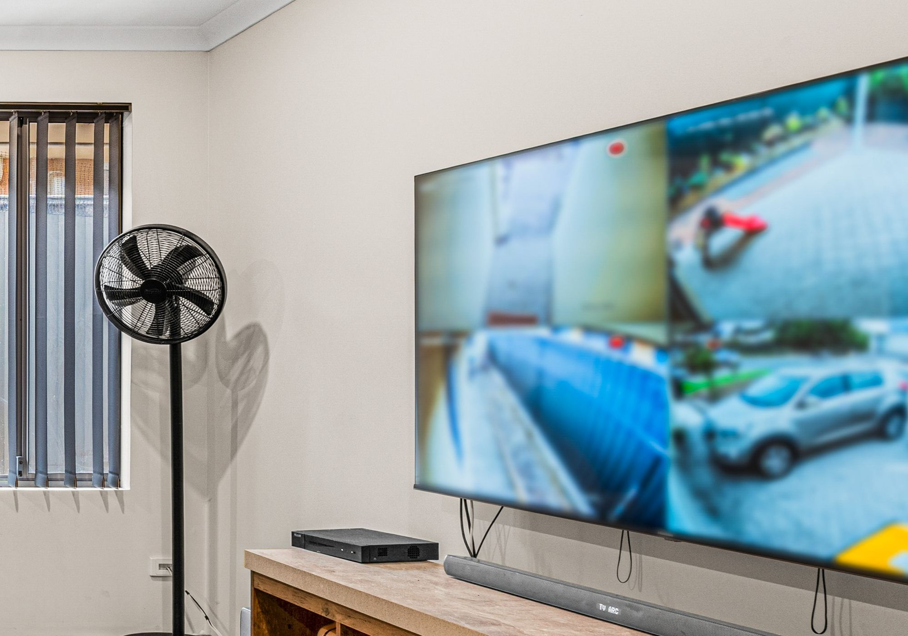
Person standing in the kitchen flash frame
The kitchen flash frame DSC05444 has a person standing in the living area. The editor removed them, but make sure the room is clear for every frame of the bracket.
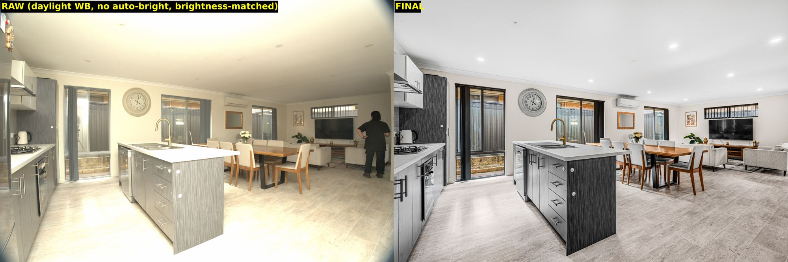
Graffitied post cuts the right edge of the front
In DSC08937 a grey post with graffiti runs down the right edge of the frame. Step left or reframe so street furniture does not cut the edge of the hero front.
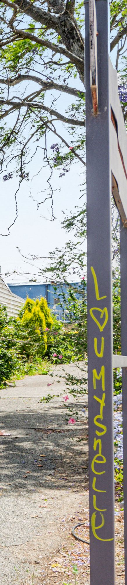
Harsh midday sun, house hidden behind conifers
Shot in hard overhead sun with strong shadows; the two conifers and the foreground branch in DSC08947 hide most of the facade. A higher or wider angle would show more of the house.
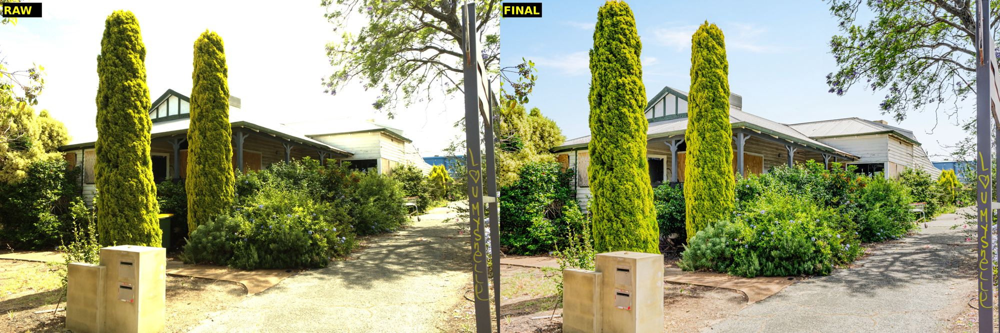
Weak flash frames in bedroom
Flash frame DSC08003 is about 4.5 stops under clipping, and DSC08002 is almost black (about 9 stops under), so it is close to a misfire. Check flash power and recycle time between frames.
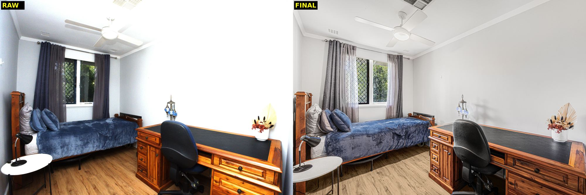